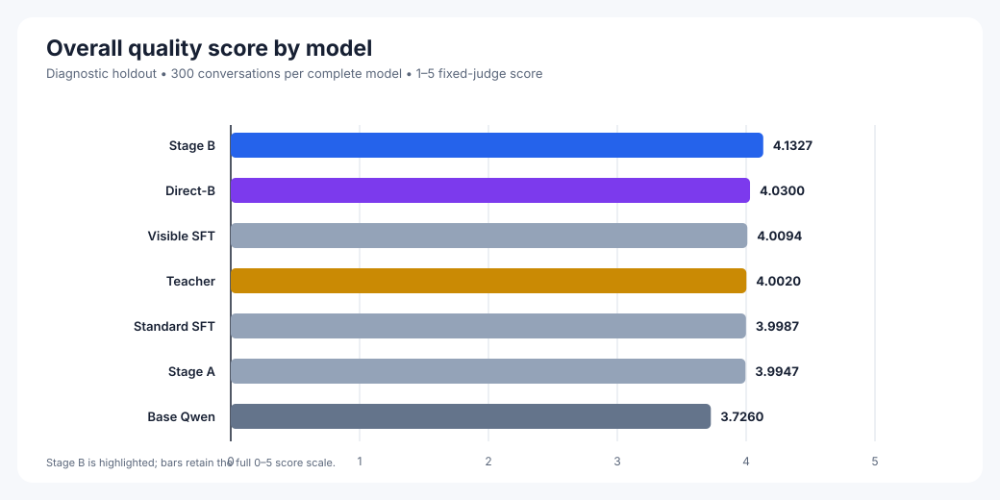
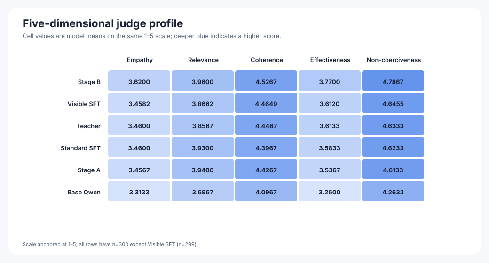
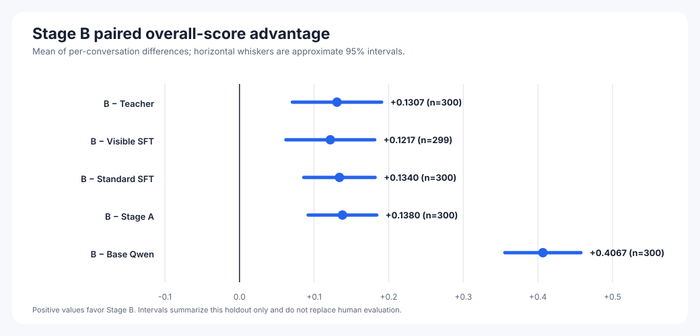
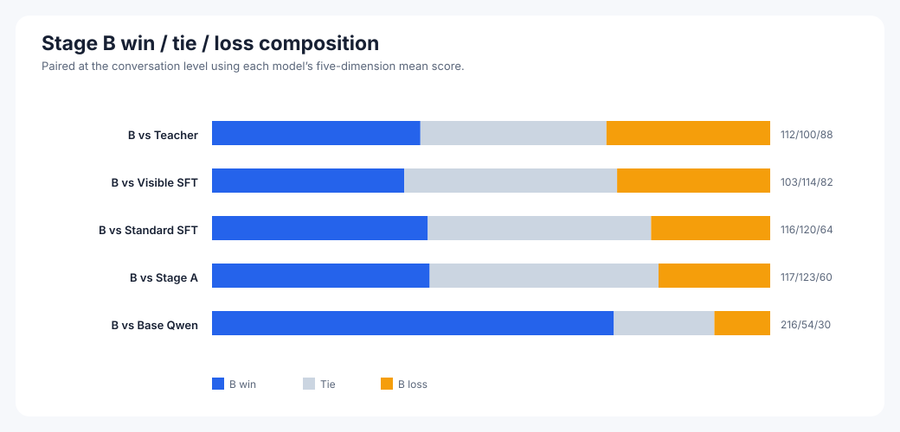
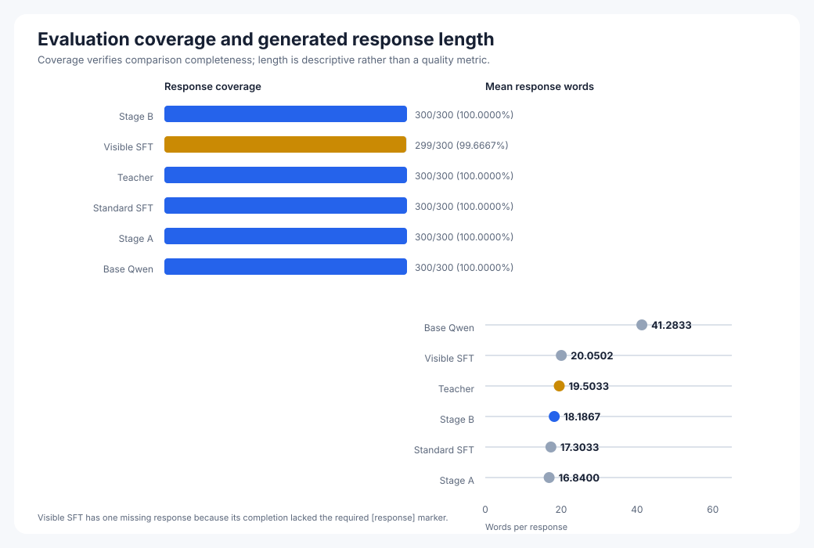

Balanced-2500 quality evaluation
Diagnostic holdout • 300 conversations • Teacher, Base Qwen, Stage A, Stage B, Standard SFT, and Visible SFT.
Primary readout: Stage B has the highest overall fixed-judge score (4.1327) and leads Teacher by +0.1307 in paired overall score. Visible SFT has one missing response (299/300), so its comparisons are incomplete.





Values and paths are recorded in data_summary.json. This is a single fixed-judge evaluation; use blinded human assessment before treating small differences as preference evidence.